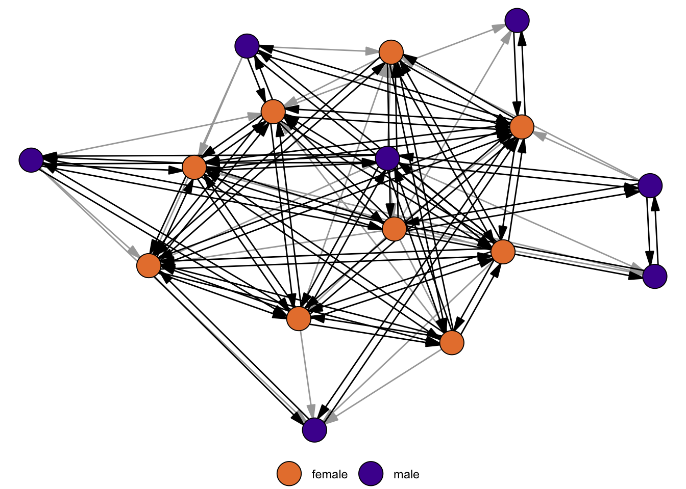
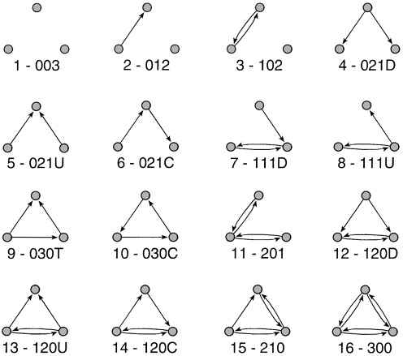

library(igraph)
library(networkdata)4 Basic Network Descriptives
4.1 Introduction
4.2 Basic Network Notation
Networks are commonly represented with an adjacency matrix or via an edgelist. If you are interested Below, we represent friendship relations between Bob, Ann, and Steve as a matrix and an edgelist.
# adjacency matrix#|
A <- matrix(
c(0, 1, 1, 1, 0, 1, 1, 1, 0),
nrow = 3, ncol = 3, byrow = TRUE
)
rownames(A) <- colnames(A) <- c("Bob", "Ann", "Steve")
A Bob Ann Steve
Bob 0 1 1
Ann 1 0 1
Steve 1 1 0# edgelist
el <- matrix(c("Bob", "Ann", "Bob", "Steve", "Ann", "Steve"),
nrow = 3, ncol = 2, byrow = TRUE
)
el [,1] [,2]
[1,] "Bob" "Ann"
[2,] "Bob" "Steve"
[3,] "Ann" "Steve"The adjacency matrix \(A\) is symmetric, meaning that the relations are undirected, i.e. Bob is friends with Ann and Ann is friends with Bob. In general, \(A[i,j]=1\), if there is a relation between \(i\) and \(j\). If \(A[i,j]=1\) does not imply \(A[j,i]=1\) then \(A\) defines a directed network.
Once we have defined an edgelist or an adjacency matrix, we can turn them into igraph objects as follows.
g1 <- graph_from_adjacency_matrix(A, mode = "undirected", diag = FALSE)
g2 <- graph_from_edgelist(el, directed = FALSE)
# g1 and g2 are the same graph so only printing g1
g1IGRAPH 4390c19 UN-- 3 3 --
+ attr: name (v/c)
+ edges from 4390c19 (vertex names):
[1] Bob--Ann Bob--Steve Ann--SteveThe printed summary shows some general descriptives of the graph. The string “UN–” in the first line indicates that the network is Undirected (D for directed graphs) and has a Name attribute (we named the nodes Bob, Ann, and Steve). The third and forth character are W, if there is a edge weight attribute, and B if the network is bipartite (there exists a node attribute “type”). The following number indicate the number of nodes and edges. The second line lists all graph, node and edge variables. Here, we only have a node attribute “name”.
The conversion from edgelist/adjacency matrix into an igraph object is quite straightforward. The only difficulty is setting the parameters correctly (Is the network directed or not?), especially for edgelists where it may not immediately be obvious if the network is directed or not.
In the following, we use a larger network to introduce some terminology.
data("greys")
The “greys” network is part of the networkdata package and consists of most characters from the show “Grey’s Anatomy” and who hooked up with whom.
greysIGRAPH f7716f1 UN-- 54 57 --
+ attr: name (v/c), sex (v/c), race (v/c), birthyear (v/n), position
| (v/c), season (v/n), sign (v/c)
+ edges from f7716f1 (vertex names):
[1] Arizona Robbins--Leah Murphy Alex Karev --Leah Murphy
[3] Arizona Robbins--Lauren Boswell Arizona Robbins--Callie Torres
[5] Erica Hahn --Callie Torres Alex Karev --Callie Torres
[7] Mark Sloan --Callie Torres George O'Malley--Callie Torres
[9] Izzie Stevens --George O'Malley Meredith Grey --George O'Malley
[11] Denny Duqutte --Izzie Stevens Izzie Stevens --Alex Karev
[13] Derek Sheperd --Meredith Grey Preston Burke --Cristina Yang
+ ... omitted several edges4.3 Simple Descriptives
The density of a network is defined as the fraction of the potential edges in a network that are actually present.
c(
edge_density(make_empty_graph(10)),
edge_density(greys),
edge_density(make_full_graph(10))
)[1] 0.0000000 0.0398323 1.0000000The density of an empty network is \(0\) and for the full network it is \(1\). The density of empirical network is somewhere in between but as the number of nodes increases, we’d expect the density to decrease and the network becomes quite sparse.
A shortest path is a path that connects two nodes in a network with a minimal number of edges. The length of a shortest path is called the distance between two nodes.
shortest_paths(greys,from = "Alex Karev",to = "Owen Hunt",output = "vpath")$vpath
$vpath[[1]]
+ 5/54 vertices, named, from f7716f1:
[1] Alex Karev Addison Montgomery Mark Sloan Teddy Altman
[5] Owen Hunt
$epath
NULL
$predecessors
NULL
$inbound_edges
NULL
distances(greys)[1:10, 1:10] Addison Montgomery Adele Webber Teddy Altman Amelia Shepherd
Addison Montgomery 0 Inf 2 2
Adele Webber Inf 0 Inf Inf
Teddy Altman 2 Inf 0 2
Amelia Shepherd 2 Inf 2 0
Arizona Robbins 3 Inf 3 3
Rebecca Pope 2 Inf 4 4
Jackson Avery 3 Inf 3 3
Miranda Bailey Inf Inf Inf Inf
Ben Warren Inf Inf Inf Inf
Henry Burton 3 Inf 1 3
Arizona Robbins Rebecca Pope Jackson Avery Miranda Bailey
Addison Montgomery 3 2 3 Inf
Adele Webber Inf Inf Inf Inf
Teddy Altman 3 4 3 Inf
Amelia Shepherd 3 4 3 Inf
Arizona Robbins 0 3 4 Inf
Rebecca Pope 3 0 3 Inf
Jackson Avery 4 3 0 Inf
Miranda Bailey Inf Inf Inf 0
Ben Warren Inf Inf Inf 1
Henry Burton 4 5 4 Inf
Ben Warren Henry Burton
Addison Montgomery Inf 3
Adele Webber Inf Inf
Teddy Altman Inf 1
Amelia Shepherd Inf 3
Arizona Robbins Inf 4
Rebecca Pope Inf 5
Jackson Avery Inf 4
Miranda Bailey 1 Inf
Ben Warren 0 Inf
Henry Burton Inf 0The Grey’s Anatomy network is disconnected and consists of \(4\) connected components. There are no shortest paths between components, which means that the distance is not measurable and set to infinity.
The length of the longest shortest path is called the diameter of the network.
diameter(greys)[1] 8
Transitivity measures the probability that the neighbors of a node are also connected. This is also called the clustering coefficient.
transitivity(greys, type = "global")[1] 0transitivity(greys, type = "local", isolates = "zero") [1] 0 0 0 0 0 0 0 0 0 0 0 0 0 0 0 0 0 0 0 0 0 0 0 0 0 0 0 0 0 0 0 0 0 0 0 0 0 0
[39] 0 0 0 0 0 0 0 0 0 0 0 0 0 0 0 0The global transitivity of an undirected network is the ratio of the triangles and the connected triples in the network. Local transitivity of a node is the ratio of the triangles connected to the node and the triples centered on the node itself. In social networks, we generally assume that the transitivity is quite high (“the friend of my friend is also my friend”). In our example, we have zero for all values. This is due to the fact that a triangle would require a same sex hook-up which did not occur (Disclaimer: I never watched the show and gathered the hook ups from various internet resources. So this may well be wrong.).
For directed networks, a measure of importance is reciprocity, which is defined as the proportion of mutual edges between nodes. To illustrate the measure, we use a network of grooming relations among a group of rhesus monkeys.
data("rhesus")
reciprocity(rhesus)[1] 0.756757About 76% of edges are reciprocated in the network. The figure below highlights the reciprocated edges.

4.4 Triad Census
In a directed network, there are 16 possible configurations of edges that can occur between three nodes. 
The triad census of a network gives the number of occurrences of each of these triad. Triads are labelled xyzL where x is the number of reciprocated ties, y is the number of unreciprocated ties and z is the number of null ties. The L term is a letter (U,C,D or T) which allows to differentiate between triads where these numbers are the same.
One of the many applications of the triad census is to compare a set of networks. In this example, we are tackling the question of “how transitive is football?” and assess structural differences among a set of football leagues.
data("football_triad")football_triad is a list which contains networks of 112 football leagues as igraph objects. A directed link between team A and B indicates that A won a match against B. Note that there can also be an edge from B to A, since most leagues play a double round robin. For the sake of simplicity, all draws were deleted so that there could also be null ties between two teams if both games ended in a draw.
Below, we calculate the triad census for all network at once using lapply(). The function returns the triad census for each network as a list, which we turn into a matrix in the second step. Afterwards, we manually add the row and column names of the matrix.
footy_census <- lapply(football_triad, triad_census)
footy_census <- matrix(unlist(footy_census), ncol = 16, byrow = T)
rownames(footy_census) <- sapply(football_triad, function(x) x$name)
colnames(footy_census) <- c(
"003", "012", "102", "021D", "021U", "021C", "111D", "111U",
"030T", "030C", "201", "120D", "120U", "120C", "210", "300"
)
# normalize to make proportions comparable across leagues
footy_census_norm <- footy_census / rowSums(footy_census)
# check the Top 5 leagues
idx <- which(rownames(footy_census) %in% c(
"england", "spain", "germany",
"italy", "france"
))
footy_census[idx, ] 003 012 102 021D 021U 021C 111D 111U 030T 030C 201 120D 120U 120C 210
england 2 10 0 58 31 40 34 44 338 29 19 118 129 143 131
france 1 23 5 30 33 44 48 40 332 41 16 132 108 160 114
germany 0 21 6 27 19 49 38 46 165 16 23 77 79 117 120
italy 1 4 2 35 43 30 30 22 419 38 5 164 116 118 99
spain 0 8 4 27 42 45 32 35 364 43 11 126 105 148 130
300
england 14
france 13
germany 13
italy 14
spain 20Notice how the transitive triad (030T) has the largest count in the top leagues, hinting toward the childhood wisdom: “If A wins against B and B wins against C, then A must win against C”.
In empirical studies, we are not necessarily only interested in transitive triads, but rather how the triad census profiles compare across networks. We follow Kathrine Faust’s suggestion and do a singular value decomposition (SVD) on the normalized triad census matrix.
footy_svd <- svd(footy_census_norm)SVDs are used to reduce the dimensionality of the data, but retaining most of the information. In our case, the data is 16 dimensional, which is impossible to visualize to compare the networks. With an SVD, we can reduce it to two dimensions and get a better visual overview.
Warning: ggrepel: 35 unlabeled data points (too many overlaps). Consider
increasing max.overlaps
How to interpret the dimensions? To investigate this question, we take a closer look at the first two dimensions and compare it to some network descriptives. For the sake of brevity, we here only look at the density and proportion of 030T triads. In general, any node/dyad/triad level statistic could be used.
Density doesn’t really seem to be related to the first dimension in this case (in many cases it is!). Might be worthwhile to explore this further
For the second dimension, we get a clearer association. It seems that the fraction of transitive triads is a good indicator for structural differences among leagues.